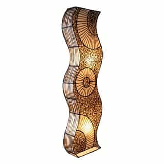
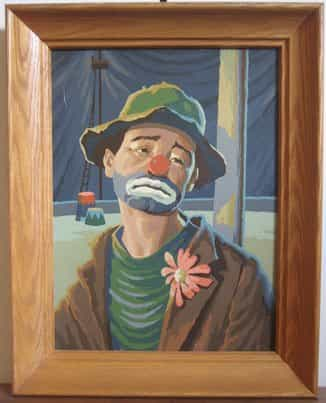
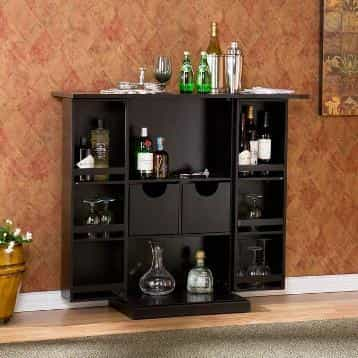
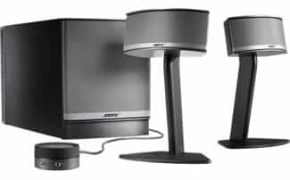
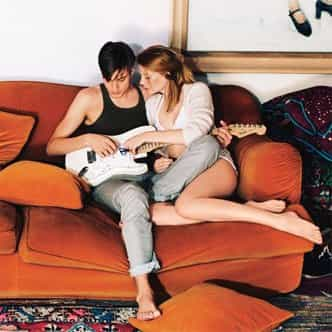

< < < Back
5 Bachelor Pad Essentials – Return Of Kings
The advantages of having an optimal living situation are well-documented. In a perfect world, you already live in a happening neighborhood where there’s a healthy cocktail of cafes, high-end boutiques, lounge-bars, and other skinny-girl magnets. In other words, you have a salad of day and night venues, with countless locations to loiter, browse, work, and “randomly” meet girls. You also live alone, without having to deal with pain-in-the-ass, cockblocking, or mangina roommates. Your place is roomy, has a view, and looks expensive.
Only a small percentage of us are fortunate enough to have all of those ingredients.
But, regardless of whether you live in your own 3,000-square-foot loft, or rent a room in an apartment with 12 other guys, there are things you can do to maximize your quality of life, and your chances of turning female guests into bangs.
1. Good Lamps
It’s difficult to over-estimate the importance of quality lighting to a space. Good light makes cheap stuff look better, makes you look better, and, more importantly, sets the mood. In a world where more and more places have that hideous fluorescent light that makes everyone’s eyes look bloodshot, warm incandescent bulbs—cast into corners of your room—is like a soothing balm to your guests.
Bonus: A lamp with a dimmer switch.

2. Framed Wall Art
Even a college freshman knows that bare walls are undesirable. What a lot of guys don’t realize is that a taped-up Reservoir Dogs poster is almost as bad. Even if it’s a cheap piece of garbage that you got at a second-hand store, put something on the wall that’s in a frame. Unique-looking pieces—for which you can fabricate an elaborate story, even if it’s obviously made-up—are ideal.
Bonus: A hand-painted piece custom framed by a professional shop.

3. Home Bar
If you’re over 21 years old and not a recovering alcoholic, there’s no excuse for not having some alcohol at your house at all times. Drinks-at-the-house is one of the most powerful (and easy) lures for bringing girls back to your place. But, like anything else, delivery is everything. You should have more than a half-finished bottle of Popov in the freezer. A simple piece of furniture, matching glasses, a selection of mid-shelf alcohol, a few mixers, and a bucket of ice is enough to get you started, and does miracles for rounding the bases without being tagged out.
Bonus: Legitimate mixologist skills honed through practice or a formal bartending course.

4. Good Speakers and Playlist
There’s an episode of Three’s Company or one of those 80s TV show where a hairy-chested guy walks into the room, hits a wall switch, and some easy-listening music track automatically comes on. That got a laugh back then. Nowadays, it gets you points. Take your time to put together a killer list of ambient, un-jarring, non-popular music that’s at least three hours long. Set it on loop just in case and have it ready before you leave the house. But remember: kick-ass music is no good coming out of some cheap, tinny laptop speakers. Invest in something with a subwoofer.
Bonus: A big LCD TV to run visualization effects full-screen while the music runs.

5. A No-Shoes Policy
You shouldn’t be allowing people—especially girls you don’t really know yet—traipsing mud into your place anyway. But having a no-shoes policy has the added advantage of getting a girl one (big) step closer to being clothes-free. There’s nothing worse than having to contend with a tight pair of Uggs mid-makeout. Girls without shoes curl their legs back on the couch, recline, and get comfortable for you.
Bonus: Japanese-style guest slippers.

In the end, you have to remember one thing: women like comfortable, intriguing spaces. And, the more comfortable a chick is, the more she’s interested in getting comfortable with you. Everything you add—and take away—from your bachelor pad, however humble, should enhance those features.
Read More: The Holidays: Amateur Nights On Steroids


{kind=link}
{kind=link}
{kind=link}
{kind=link}